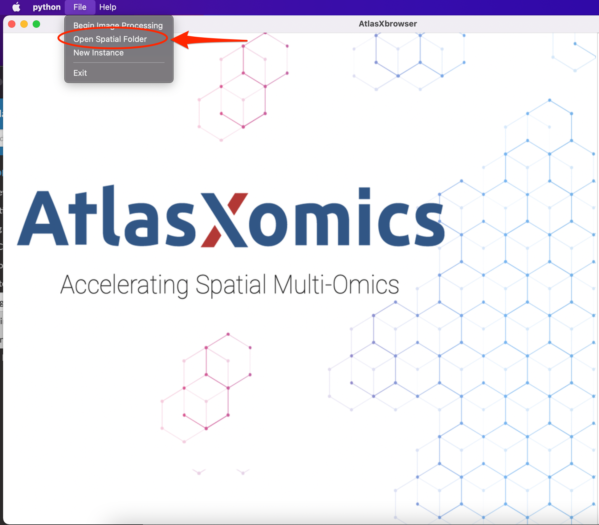

Utilizing Spatial Folder
Examining Spatial Folder
Once the image has been processed using AtlasXbrowser, the relevent information will be stored within the Spatial Folder.
Navigate through your file directories to the location in which the original images read into AtlasXbrowser are located.
Within this directory find the newly created folder labeled Spatial, examine the contents of this folder.
The spatial file contains multiple items of interest:
The Low Resolution and High Resolution versions of the cropped BSA image. These images are saved as tissue_lowres_image.png and tissue_highres_image.png respectively.
The metadata.json file. This JSON file contains all the metadata entered upon loading the image through AtlasXbrowser, as well as:
Coordinates of the form x1, y1, x2, y2, x3, y3, x4, y4corresponding to the four corners of the ROI of the image.
The information chosen about pixel thresholding, including BlockSize and threshold value.
The number of on-tissue tixels within the image.
The height of the image and the specifications about the image’s orientation, specifically the degrees it was rotated.
The tissue_positions_list.csv which contains the following information, specified in column order, starting from the left most:
The unique barcode corresponding to a specific tixel.
An indicator for whether or not the tixel was designated as on or off tissue. A 1 indicates on-tissue and a 0 indicates off tissue.
The row this tixel is found in, indexed starting from 0.
The column the tixel is found in, indexed starting from 0.
The X-Coordinate of the tixel.
The Y-Coordinate of the tixel.
Loading Spatial Folder
Once the spatial folder has been created, it can be loaded back into AtlasXbrowser, allowing for quality control, as well as decisions made about what has on and off tissue to be changed.
While one can load in the spatial folder directly after it is created by AtlasXbrowser, the functionality will be limited to re-doing the step in which a user manually identifies tixels as on or off tissue, following the predictions made by AtlasXbrowser.
In order to visualize both the number of UMI’s and number of raw counts within a tixel, a user must generate a file titled tissue_positions_list_log_UMI_Genes.csv. This file is identical to the
1.) Select File, then Open Spatial Folder

2.) The threshold image, along with the tixel grid, and accompanying tixel states will be loaded into the Browser. From here, navigated to under the Visualization tab, the user has three options to choose in what they want the browser to display.
Tixel: This view is identical to the manual tixel delination step during image processing, with the states of these tixels taken directly from what was saved during image processing.
Feature: This setting colors each tixel according to a log transform of the number of unique genes mapped to that tixel.
Count: This setting colors each tixel according to a log transform of the total number of counts mapped to that tixel.
While on any one of these settings, the user is able to click and flip the on or off tissue designation of a tixel. This is most useful when originally a tixel was said to be on tissue, however then upon loading in the tissue_positions_list_log_UMI_Genes.csv file, there were no or minimal reads mapped to that tixel.